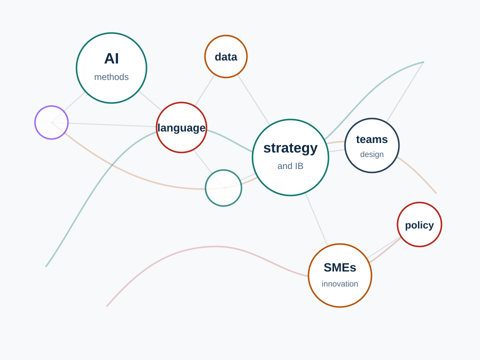

AI, language, and disputes
Computational analysis of how language, culture, and organizational action interact in international disputes.
Strategy · International Business · AI-enabled research
I study how organizations, markets, and teams adapt under complexity, with a focus on international disputes, innovation, AI-enabled analysis, and the design of human-AI teams.

Research focus
Computational analysis of how language, culture, and organizational action interact in international disputes.
Research on cooperation, performance stability, exploration, team metacognition, and human-AI team design.
Studies of public knowledge sources, state agencies, innovation types, and export strategy for smaller firms.
Selected work
Journal of Business Research, 201, 115728. With T. C. Lawton, J. Doran, and N. McCarthy.
DOIAI-powered analysis of the language-action nexus. Shortlisted for the SMS Annual Conference PhD Paper Prize 2025.
Examines how performance stability drives exploration. Shortlisted for the SMS Annual Conference Research Methods Paper Prize 2025.
Screening for cooperation in gender-diverse teams. Nominated for the SMS Annual Conference Best Paper Prize 2026.
Theory of mind and team metacognition project with Ella Miron-Spektor and Phanish Puranam, funded by an INSEAD R&D Research Grant.
Methods
Yue Ling develops AI-enabled research and experimentation applications, applies multilingual text analysis, and combines computational methods with econometric modeling.
Academic activity
Teaching assistant and instructor support across INSEAD summer schools, UCC management and economics courses, and graduate workshops.
Conference and invited presentations at Academy of Management, Strategic Management Society, Wharton WINDS, Harvard OUI, Tel Aviv University, and more.
Deputy Communication and Media Editor at Long Range Planning, Social Media Editor for Management and Organization Review, and ad-hoc reviewer.
Supported by INSEAD, Israel Science Foundation, NSF and DoE NAIRR resources, UCC fellowships, and SMS doctoral workshop scholarship.